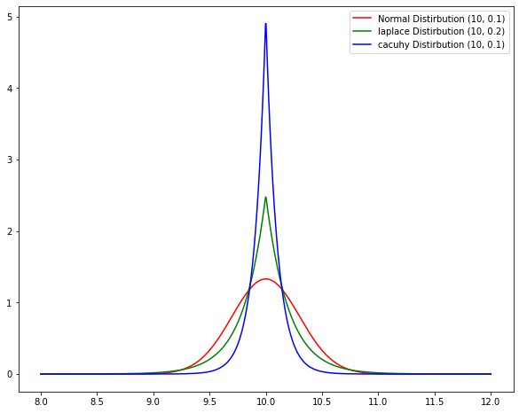
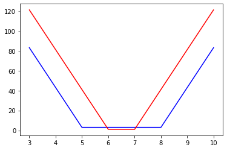

## hide
import numpy as np
import scipy.stats as stats
import matplotlib.pyplot as plt
Comparing Distributions : Normal, Laplace and Cauchy
We want to represent a fact of a real number \(x\) and its uncertainty. Probability distirbution is one of the representation to hold such information.
For example, we want to store a fact that the value of a variable is 10 with uncertaitny of \(+- 0.5\) . In other format the value lies between \([9.5, 10.5]\)
This can be represented using different probability distributions. 1. Normal distirbution - N(10, 0.3) 2. Laplace distirbution - L(10, 0.2) 3. Cauchy distribution - C(10, 0.1)
The question we are interested is if a particular fact is represented using these distribution. How to compare the uncertainty ?
For example: the above distirbutions how all of them have peak at 10 but how to compare are these distirbutions having the same spread.
Such situations come in machine learning or deep learning situation where you have the output of the AI model predicting a distribution (laplace or cauchy) and you have the true value and you want to compare which distribution is giving a better result.
Lets visually check how the distirbution looks.
normal_dist = stats.norm(loc=10, scale=0.3)
laplace_dist = stats.laplace(loc=10, scale=0.2 )
cauchy_dist = stats.laplace(loc=10, scale=0.1)
x = np.linspace(8, 12, num=1000)
fig, ax = plt.subplots( 1, 1, figsize=(10,8))
ax.plot(x, normal_dist.pdf(x), label='Normal Distirbution (10, 0.3)', c='r')
ax.plot(x, laplace_dist.pdf(x), label='laplace Distirbution (10, 0.2)', c='g')
ax.plot(x, cauchy_dist.pdf(x), label='cacuhy Distirbution (10, 0.1)', c='b')
ax.legend()
Questions
- How to compare these 3 distirbution?
- More importantly if a particular distirbution is representing an uncertain information, then how can we measure which value is giving the best representation of the uncertainty.
Solution
For comparing uncertainty different methods has been mentioned in literature. The one which we are going to use here is Interval Score, which comes under the field of Proper Scoring Rules [1].
Proper Scoring rules
Scoring rules assess the quality of probabilistic forecasts, by assigning a numerical score based on the predictive distribution and on the event or value that materializes. It is strictly proper if the maximum is unique. In prediction problems, proper scoring rules encourage the forecaster to make careful assessments and to be honest. In estimation problems, strictly proper scoring rules provide attractive loss and utility functions that can be tailored to the problem at hand [1]
[1] Gneiting, Tilmann, and Adrian E. Raftery. “Strictly proper scoring rules, prediction, and estimation.” Journal of the American statistical Association 102.477 (2007): 359-378.
Scoring Rules for Quantile and Interval Forecasts
Interval Score
- classical case of $(1 - ) % $ prediction interval
- with lower and upper endpoints (predictive quatiles) at level \(\alpha/2\) and $ 1 - /2$
- Interval score \[ S_\alpha^{int}(l, u ;x) = (u-l) + \frac{2}{\alpha}(l-x) \mathbb{1} \{x < l\} + \frac{2}{\alpha} (x - u)\mathbb{1}\{x > u\}\]
\(\alpha_1= 0.02,\alpha_2= 0.05,\alpha_3=0.1\) (implying nominal coverages of 98%,95%,90%)
def interval_score(x, lower, upper, alpha=0.05):
assert np.all(upper>=lower), "Upper should be greater or equal to lower. Please check are you giving the upper and lower in propoer order "
return (upper - lower) + (2/alpha)*(lower-x)*(x<lower) + (2/alpha)*(x-upper)*(x>upper)x = np.linspace(3.0, 10.0)
l = 5.0
u = 8.0
iscore = interval_score(x, l, u)
plt.plot(x, iscore, c='b')
l = 6.0
u = 7.0
iscore = interval_score(x, l, u)
plt.plot(x, iscore, c='r')
The way to interpret the method with respect to state-estimation algorithm can be. Let \(x\) be the true_value and the prediction is the range \([5,8]\) then the intervalscore is minimum if the true value was also inbetween \([5,8]\) as shown in the blue plot.
With the red plot you can see if you give a tigher bound then the score is further low.
So if the true value is inside the lower and uper limits the score is minimum also with tighter bound you get better scores
Using Interval Score for Distirbutions
** We need to define the intervals** .
So how do we calculate the intervals of different distirbutions ??
sympy to help, it has the > .interval(alpha) function
Lets calcuate the interval function of the above distirbutions
print (" Normal Distirbution 95% interval ", normal_dist.interval(alpha=0.95))
print (" Laplace Distirbution 95% interval", laplace_dist.interval(alpha=0.95))
print (" Cauchy Distirbution 95% interval", cauchy_dist.interval(alpha=0.95)) Normal Distirbution 95% interval (9.412010804637983, 10.587989195362017)
Laplace Distirbution 95% interval (9.400853545289202, 10.599146454710798)
Cauchy Distirbution 95% interval (9.700426772644601, 10.299573227355399)Formula
So now we have the lower and upper limit for each distirbution . Lets now calculate the Interval Score.
l, u = normal_dist.interval(alpha=0.95)
print ("Normal Distirbution :")
print ("95% interval ", normal_dist.interval(alpha=0.95))
print ("Interval Score ", interval_score(10 , l, u))
print ("############### ")
print ("Laplace Distirbution")
l, u = laplace_dist.interval(alpha=0.95)
print ("95% interval ", laplace_dist.interval(alpha=0.95))
print ("Interval Score ", interval_score(10 , l, u))
print ("############### ")
print ("Cauchy Distirbution 95%")
l, u = cauchy_dist.interval(alpha=0.95)
print ("95% interval ", cauchy_dist.interval(alpha=0.95))
print ("Interval Score ",interval_score(10 , l, u))Normal Distirbution :
95% interval (9.412010804637983, 10.587989195362017)
Interval Score 1.1759783907240333
###############
Laplace Distirbution
95% interval (9.400853545289202, 10.599146454710798)
Interval Score 1.1982929094215962
###############
Cauchy Distirbution 95%
95% interval (9.700426772644601, 10.299573227355399)
Interval Score 0.5991464547107981Here you can see for True value \(x = 10\), Cauchy Distirbution (loc=10, scale=0.1) gives the minimum Interval Score of 0.6 .
Thus, with Interval Score a Proper scoring rule we can compare different distirbutions.